SPORTS MEDICINE & ARTHROSCOPY DIGEST
运动医学 · 关节镜文献速览
第 012 期 · 2026-09-20
9月18日单日（9/19 周六无新收录）10 本核心期刊新收录 16 篇（精选 11 篇）
按部位分类：膝 4 · 髋 2 · 肩 4 · 踝足 1 ｜ 含 2 篇系统综述/Meta · 4 篇倾向性评分匹配研究 · 2 篇长期随访（≥10年）
编者按 EDITOR'S NOTE
本期覆盖 9 月 18–19 日（9 月 19 日为周六，期刊无新收录，实际全部来自 9 月 18 日），10 本核心期刊共检出 16 篇，剔除仅题录与无实质摘要者后精选 11 篇。
本期髋关节镜集中发力，且两篇都用了倾向性评分匹配：一篇显示 关节囊紧缩治疗微不稳的 2 年结局与匹配对照相当（208 vs 208 髋），另一篇则提示 全局髋臼过度覆盖者 5 年虽显著改善，但翻修率明显更高（15.69% vs 7.84%）——同一术式在不同形态学亚组里的结局分化值得注意。膝关节侧，「膝关节信心缺失」这条线索很有意思：术前 88.5% 的患者缺乏信心，2 年后降至 24.2%，且信心缺失者功能评分更低，与 FJS-12 综述形成互补——心理维度正在成为 ACLR 评价的常规组成部分。
▍膝关节 · 4 篇
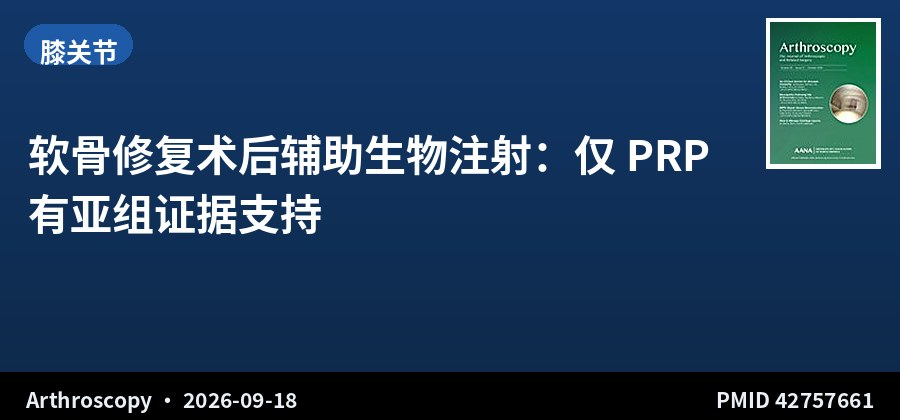
系统综述+RCT亚组Meta · I级证据 · 5项RCT · 217例
软骨修复术后辅助生物注射：仅 PRP 有亚组证据支持
Orthobiologic Injections Adjunctive to Cartilage-Preserving Surgery May Improve Outcomes for Focal Knee Chondral Defects: A Systematic Review of Randomized Controlled Trials With Subgroup Meta-analyses
Arthroscopy · 2026-09-18 · 加拿大麦克马斯特大学 / 多伦多大学 · PMID 42757661
一句话结论：5 项 RCT、217 例（干预含 PRP、外周血干细胞、脂肪间充质干细胞等，于软骨修复术中和/或术后给药）。2 项 PRP 研究的随机效应亚组 Meta 分析显示疼痛小幅下降（均差 -0.93，95%CI -1.39 至 -0.47，I²=17%）、IKDC 改善（均差 13.4，95%CI 10.1–16.7，I²=0%）；外周血干细胞 + 玻璃酸钠组 MRI 软骨指标显著改善。
要点：软骨修复术式包括软骨下钻孔与微骨折。检索 PubMed、MEDLINE、EMBASE、Scopus（截至 2025 年 9 月），偏倚风险用 Cochrane RoB 2 评估。各项生物制剂研究的结局指标与随访时间差异较大。
对临床的启示：「软骨修复 + 打一针」在临床上逐渐流行，但这项综述说明目前只有 PRP 有可合并的 RCT 证据，且效应量属「小幅」。IKDC 改善 13.4 分值得留意，但其来源仅 2 项研究、样本有限。外周血干细胞 + 玻璃酸钠的数据集中在影像学改善，功能结局证据仍弱。总体而言，辅助注射可作为可讨论的附加选项，但不宜作为标准流程向患者承诺。
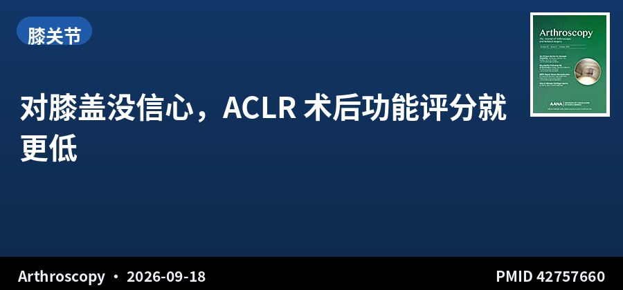
回顾性队列 · III级证据 · 165例 · 随访2年
对膝盖没信心，ACLR 术后功能评分就更低
Lack of Knee Confidence Is Associated With Lower Functional Scores After Anterior Cruciate Ligament Reconstruction at 2-Year Follow-Up
Arthroscopy · 2026-09-18 · 美国布莱根妇女医院 / 哈佛医学院 · PMID 42757660
一句话结论：165 例初次 ACLR（腘绳肌腱自体或异体，随访≥2 年）中，术前 88.5% 患者对膝关节缺乏信心，2 年时降至 24.2%。缺乏信心与较差的 KOOS Sports/Rec 亚量表及 Marx 活动评分显著相关。
要点：以 KOOS 第 41 题「膝关节缺乏信心对你的困扰程度」为判定依据，回答「中度」「重度」「极重度」者定义为缺乏信心。排除合并韧带手术、翻修、股四头肌腱或 BPTB 自体腱、同期截骨及缺失该题数据者，以控制混杂。
对临床的启示：「膝盖没信心」不是矫情，而是一个能预测功能结局的临床指标，且它的改善速度慢于疼痛与力学指标——2 年后仍有近四分之一患者缺乏信心。临床上可把这道题当作康复随访的常规筛查项，对持续缺乏信心者主动介入（心理支持、渐进式重返运动），而不是等患者自己提。这条与本期 FJS-12 综述互为补充，共同指向 ACLR 评价中的心理-体验维度。
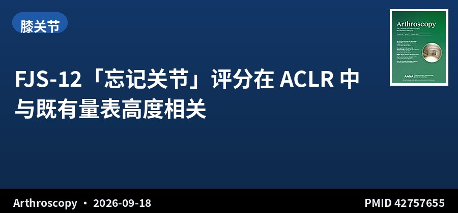
系统综述 · I–IV级证据 · 13项研究 · 1295例
FJS-12「忘记关节」评分在 ACLR 中与既有量表高度相关
The Forgotten Joint Score Shows High Correlation With Established Anterior Cruciate Ligament Reconstruction Patient-Reported Outcome Measures While Capturing Joint Awareness and Functional Recovery: A Systematic Review
Arthroscopy · 2026-09-18 · 加拿大麦克马斯特大学 · PMID 42757655
一句话结论：13 项研究、1295 例患者（1316 膝，平均 31.3 岁，平均随访 44.3 个月）显示：FJS-12 评分跨度 37.0–92.6，与 IKDC 主观量表、Lysholm、KOOS 呈强正相关（4 项报告相关性的研究中 3 项 r>0.80），尤以单纯 ACLR 病例最为明显；与 Tegner 活动水平呈低至中等相关（r=0.318–0.606）。
要点：检索 PubMed、Embase、MEDLINE（2026 年 2 月 7 日）。FJS-12 原本用于关节置换领域，本研究评估其作为 ACLR 补充评价工具的有效性，并提取人口学、手术细节与各量表相关性数据。
对临床的启示：FJS-12 的独特价值在于捕捉「忘掉关节」这一患者最在意的长期体验，而非单纯的功能分数。本研究显示它与既有量表高度相关（说明不冲突、可并存），同时补充了传统量表未覆盖的关节感知维度。对追求更细致疗效评价的研究者，把它加入 PROMs 组合是低成本的增益——尤其适合评价「术后关节是否还像个正常关节」这类问题。
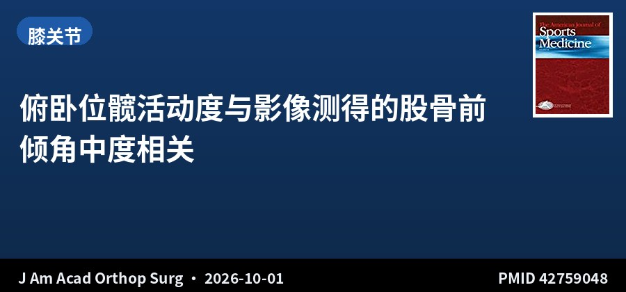
回顾性队列 · III级证据 · 146例/259髋 · 影像学对照
俯卧位髋活动度与影像测得的股骨前倾角中度相关
The Relationship Between Prone Range of Motion and Measured Femoral Version on Advanced Imaging in Adolescent Patients
J Am Acad Orthop Surg · 2026-10-01 · 美国费城儿童医院 / 范德堡大学 · PMID 42759048
一句话结论：146 例（259 髋，平均 15.2 岁，83% 女性，平均总活动弧 91.5°）显示：俯卧位内旋（IR）与股骨前倾角（FV）中度正相关（CT r=0.63、MRI r=0.60，均 P<.001），外旋（ER）中度负相关（CT r=-0.63、MRI r=-0.62），CT 测得的 FV 与 MRI 强相关。
要点：纳入≤18 岁髋痛患者，需在临床查体 6 个月内完成髋 MRI 和/或含股骨远端髁轴位层面的 CT，并同时有俯卧位 ROM 记录。排除缺乏影像、神经肌肉疾病、股骨头形态异常或影像前有髋部手术史者。总活动弧为俯卧 IR 与 ER 之和。
对临床的启示：临床常靠俯卧位旋转活动度粗略判断股骨前倾异常，这项研究给出了具体的相关系数——约 0.6，属中等强度，意味着查体有参考价值但不精确，不能替代影像定量。对青少年髋痛患者，若查体高度怀疑股骨前倾异常，仍应安排 CT 或 MRI 确认，尤其是在考虑截骨方向时。CT 与 MRI 测量强相关这一点，则为选择相对低辐射的 MRI 提供了依据。
▍髋关节 · 2 篇
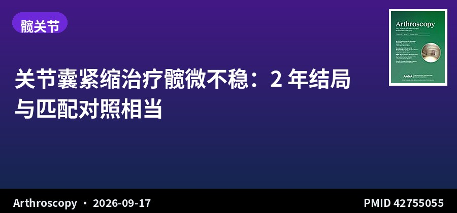
匹配对照 · III级证据 · 208 vs 208髋 · 随访2年+
关节囊紧缩治疗髋微不稳：2 年结局与匹配对照相当
Outcomes of Capsular Plication as Part of Hip Arthroscopic Management for Surgically Identified Microinstability Are Comparable to Outcomes in Matched Controls
Arthroscopy · 2026-09-17 · 新西兰奥克兰 Orthosports North Harbour · PMID 42755055
一句话结论：208 髋术中确认的微不稳（平均 30.9 岁，201 例女性）接受髋关节镜 + 关节囊紧缩，与按性别、年龄、外侧中心边缘角（LCEA）、软骨缺损程度 1:1 匹配的 208 例对照相比，iHOT-12、NAHS、HOOS 各评分相当，仅 HOOS-Sports 亚量表的变化轨迹存在轻微组间差异。
要点：微不稳的术中判定标准包括：麻醉下牵开更容易、孤立的直前方盂唇撕裂、由内向外型软骨损伤、或 Seldes 2/3 级外侧盂唇撕裂且无凸轮或钳形形态。排除 LCEA<18° 者。翻修/再手术或转为髋关节置换的比率亦作比较。
对临床的启示：髋微不稳的诊断长期缺乏客观标准，本研究给出了一组可操作的术中判定特征，这本身就有临床价值。更重要的是，结果显示针对微不稳加做关节囊紧缩不会带来结局损失——为「该不该缩」提供了 208 对匹配的循证支持。对你正在做的 FAI 研究，这套术中判定标准与匹配思路（尤其按 LCEA 与软骨分级匹配）可直接借鉴为方法学参考。
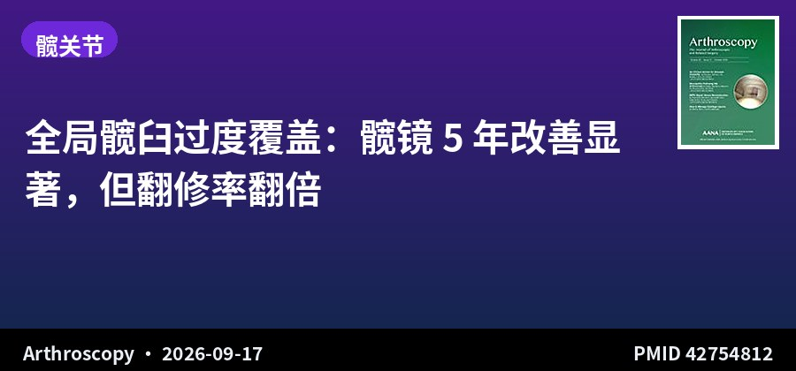
匹配对照 · III级证据 · 51 vs 153髋 · 随访5年
全局髋臼过度覆盖：髋镜 5 年改善显著，但翻修率翻倍
Hip Arthroscopy in Patients With Global Acetabular Overcoverage Shows Significant 5-Year Improvements but Poses a Higher Risk of Revision Surgery Compared With Matched Controls
Arthroscopy · 2026-09-17 · 美国 American Hip Institute · PMID 42754812
一句话结论：204 例（全局覆盖组 51 例 vs 匹配对照 153 例，按年龄、性别、BMI、髋臼 Outerbridge 分级、盂唇与关节囊处理 1:3 匹配）：全局覆盖组（LCEA≥40° 且 coxa profunda）术后 mHHS、NAHS、HOS-SSS、VAS 均显著改善（P<.001），改善幅度与达标率（MCID、PASS）与对照组相似，但翻修髋关节镜比例更高（15.69% vs 7.84%）。
要点：数据来自 2008–2020 年前瞻性收集的初次髋关节镜病例。全局覆盖定义为骨盆正位片上 LCEA≥40° 且存在 coxa profunda；对照组 LCEA 介于 25°–39°。
对临床的启示：这是「功能改善好、但耐久性差」的典型模式：全局髋臼过度覆盖患者做髋关节镜，短期内主观感受的改善不输给普通 FAI 患者，但翻修风险约为两倍。机制上这类髋臼形态对股骨头前方的覆盖本身就更重，单纯处理盂唇而不改变骨性覆盖，可能只是延后问题。临床上对 LCEA≥40° 者应提前说明翻修概率，并认真权衡是否需要在同一手术中处理骨性过度覆盖。
▍肩关节 · 4 篇
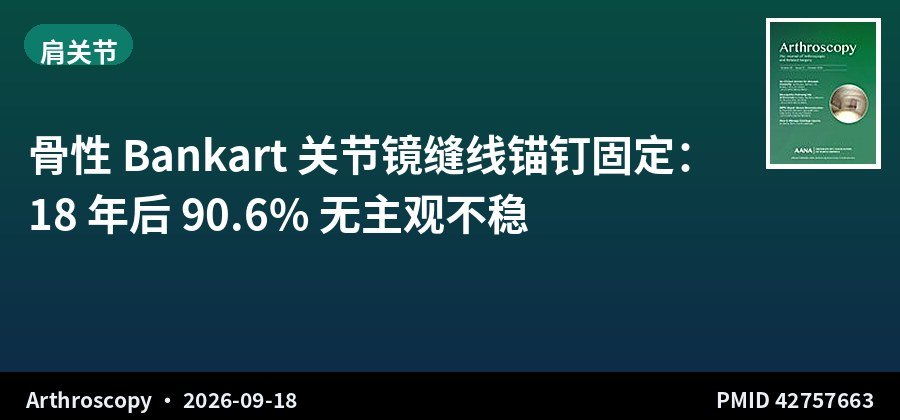
长期随访 · IV级证据 · 32例 · 平均18.3年
骨性 Bankart 关节镜缝线锚钉固定：18 年后 90.6% 无主观不稳
Long-Term Clinical Outcomes of Arthroscopic Suture Anchor Fixation of Bony Bankart Lesions at a Mean 18-Year Follow-Up
Arthroscopy · 2026-09-18 · 德国慕尼黑工大 Rechts der Isar / 柏林 Charité · PMID 42757663
一句话结论：32 例（平均随访 18.3 年，范围 14.4–25.1 年）显示：90.6% 患者报告无主观不稳，采用队列特异性 MCID 阈值评估 Constant、SSV、ASES、Oxford 不稳评分与 WOSI 的变化，患者满意度按预设阈值（≥8/10）评估。
要点：纳入 1999–2010 年因创伤性肩不稳伴前缘盂骨骨折、接受关节镜单排缝线锚钉固定的患者，要求随访至少 14 年。原始 50 例中，45 例曾纳入中期随访研究，13 例失访或去世（7 例失访、6 例死亡），最终长期随访 32 例。
对临床的启示：骨性 Bankart 的关节镜固定长期疗效数据稀缺，这项 18 年随访提供了高质量答案：九成患者保持无主观不稳。意义在于它支持「对合适的骨性 Bankart，关节镜固定可以取得持久效果」，无需一律上骨块移植。但需注意该研究为单中心、IV 级证据、最终仅 32 例，且手术年代较早（1999–2010），与当代双排/无结技术存在差异，解读时需留意时代因素。
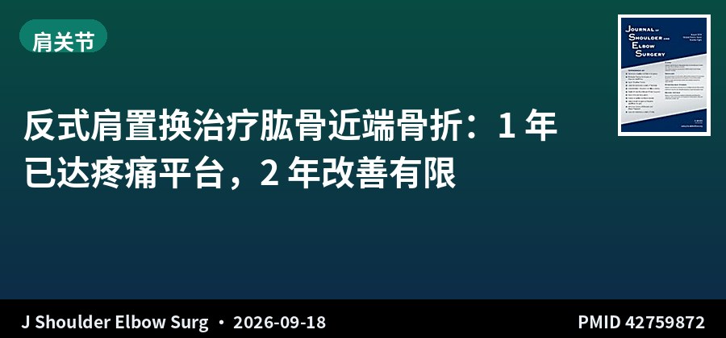
回顾性分析 · III级证据 · 64例 · 随访2年
反式肩置换治疗肱骨近端骨折：1 年已达疼痛平台，2 年改善有限
One- to Two-Year Interval Changes After Reverse Total Shoulder Arthroplasty for Acute Proximal Humerus Fractures: Are They Clinically Meaningful?
J Shoulder Elbow Surg · 2026-09-18 · 美国克利夫兰医学中心 / 阿根廷 · PMID 42759872
一句话结论：64 例急性肱骨近端骨折行反式肩关节置换（rTSA，2 年随访）显示：疼痛在 1 年时已缓解（VAS 1.4±0.7）并于 2 年保持稳定（1.3±0.8，P=.672），两时点 PASS 达标率均 >95%。SANE（73.8→75.4）、ASES（74.3→75.7）、外旋（15°→16°）虽有统计学显著改善（P<.05），但 1–2 年间达到个体 MCID 的比例分别仅 9.4%、3.1% 与 10.9%。
要点：回顾性分析前瞻性收集的数据。以 PASS 达标率与个体层面 MCID 达成率两种方式评估 1–2 年间变化的临床意义，并用回归分析识别与区间变化相关的因素（BMI、骨折复杂程度、优势侧等）。
对临床的启示：这篇研究的价值在于把「统计学显著」与「临床有意义」明确区分开：1–2 年间的评分改善虽然 P 值好看，但只有 3%–11% 的患者经历了有临床意义的提升——换言之，rTSA 术后 1 年基本就是最终状态。这对康复预期管理很有用：术后 1 年时应完成主要功能恢复，此后重点是维持而非指望继续大幅改善；若 1 年时效果不佳，需及早查找原因而非等待。
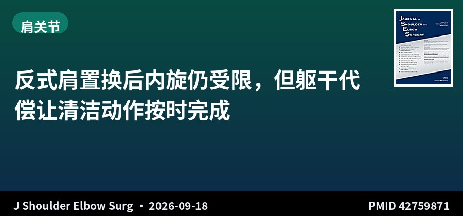
前瞻队列+3D动作捕捉 · II级证据 · 35例
反式肩置换后内旋仍受限，但躯干代偿让清洁动作按时完成
Whole-Body Compensation Supports Early Functional Hygiene Recovery Despite Persistent Internal Rotation Deficits After Reverse Shoulder Arthroplasty
J Shoulder Elbow Surg · 2026-09-18 · 美国罗切斯特大学 · PMID 42759871
一句话结论：35 例（平均 72.3 岁）初次 rTSA 患者术前及术后 3、6 个月行三维动作捕捉与动态表面肌电（手背后标准化任务）：肩内旋活动度在 3 个月时下降（19.94° vs 29.63°，P<.001）且 6 个月仍低于基线（22.92°，P<.01），但完成任务时间从术前 2.72 秒缩短至 3 个月 2.21 秒、6 个月 2.20 秒（均 P<.01）。
要点：功能性触及（腕至骶骨距离）初期变差（21.78 vs 17.73cm，P<.001），但 6 个月时回到基线（18.43cm），仍逊于健侧。代偿性运动增加，线性混合效应模型按年龄、性别、BMI 校正。
对临床的启示：「内旋角度没恢复，但患者能完成动作」——这项 3D 动作捕捉研究揭示了 rTSA 康复中常被忽略的机制：躯干与轴向骨骼的代偿承担了相当部分功能。这提示康复评价不应只看关节活动度数字，功能性任务完成能力（如时间、实际达成）可能更有意义；同时也说明过度强调恢复内旋角度可能并不现实，训练重点可转向优化代偿模式与任务效率。
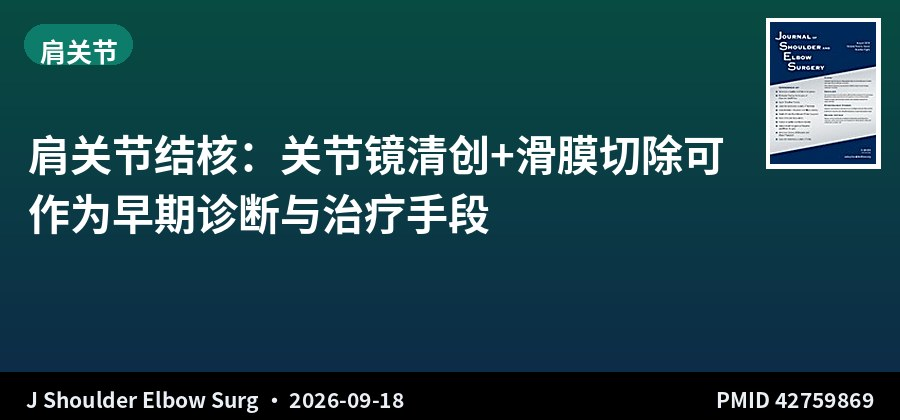
回顾性病例系列 · IV级证据 · 18例 · 关节镜
肩关节结核：关节镜清创+滑膜切除可作为早期诊断与治疗手段
Clinical Outcomes of Arthroscopic Treatment for Shoulder Joint Tuberculosis
J Shoulder Elbow Surg · 2026-09-18 · 四川大学华西医院运动医学中心 · PMID 42759869
一句话结论：18 例确诊或临床疑似肩关节结核患者，在至少 3 周抗结核治疗后接受关节镜下滑膜切除与清创，评估早期诊断与治疗效果。肩关节结核是肺外结核的罕见形式，早期诊断困难、晚期症状严重，相关研究极少。
要点：纳入时间跨度为 2015 年 1 月至 2025 年 1 月。研究关注关节镜在获取病理组织、明确诊断与清除病灶中的作用，以及术后症状与功能改善情况。
对临床的启示：肩关节结核在临床上极易被误诊为普通滑膜炎或冻结肩，而关节镜的优势正在于能直视滑膜病变并取活检确诊。这项来自华西医院的研究为「关节镜在感染性关节炎中的诊断价值」提供了一个国内样本。需注意的是病例数少（18 例）、属 IV 级证据，且随访数据有限，但它提示我们：对抗结核治疗反应不佳的「滑膜炎」，应把感染纳入鉴别并及时取病理。
▍踝足 · 1 篇
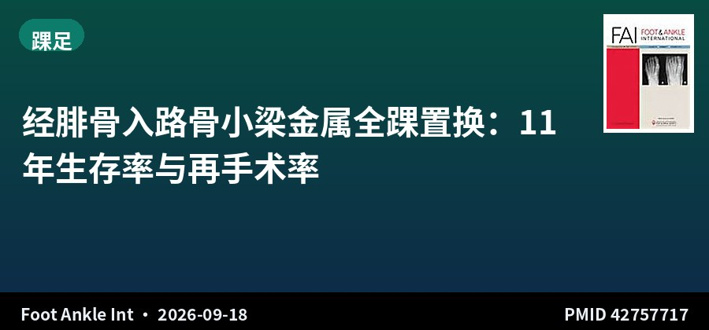
长期随访 · IV级证据 · 71踝 · 随访11年
经腓骨入路骨小梁金属全踝置换：11 年生存率与再手术率
Long-term Survivorship of Transfibular Trabecular Metal Total Ankle Arthroplasty: 10-Year Minimum Clinical and Radiographic Follow-up
Foot Ankle Int · 2026-09-18 · 美国 NYU Langone / Mercy 医学中心 · PMID 42757717
一句话结论：71 踝（68 例，平均年龄 61 岁，平均随访 11.0 年，占原始 79 例的 89.9%）显示：仅 1 例因假体周围感染行金属组件翻修并最终膝下截肢（CROCS 11）；29 踝（40.8%）接受再手术，以沟槽清创最常见（12 例，CROCS 4）；4 踝（7%）发现 5 个囊性病灶。5 年后的 PROMs、影像学对线与活动度保持稳定。
要点：回顾性分析单术者前瞻性随访的初次经腓骨入路骨小梁金属全踝置换病例（2012 年 10 月–2016 年 2 月），要求至少 10 年临床与影像学随访。PROMs 含 SF-12 PCS/MCS、AOS 与 VAS；再手术按 CROCS 系统分级报告。
对临床的启示：第四代全踝假体的长期生存数据一直欠缺，这项 11 年随访给出了相对乐观的结果：金属组件翻修仅 1 例，且主要并发症可控。值得关注的是 40.8% 的再手术率——虽多为沟槽清创这类小手术，但意味着「装完即安」并不成立，患者需要长期随访预期。对拟行全踝置换的患者，这是把「再手术不等于失败」讲清楚的好素材，也提示沟槽问题是长期随访的重点观察对象。
关于本栏目：每日定时检索 AJSM、Arthroscopy、Arthroscopy Techniques、KSSTA、Sports Health、OJSM、J ISAKOS、Sports Medicine、Foot & Ankle International、JSES 共 10 本运动医学核心期刊前一日新收录文献，按关节分类，AI 辅助生成中文精要。
声明：本内容由 AI 辅助整理，仅供学术交流参考，观点与数据请以原文为准，不构成诊疗建议。文献题录与摘要来源：PubMed。
— 运动医学 · 关节镜文献速览 · 第 012 期 —